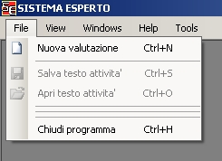
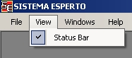
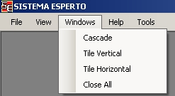
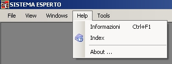
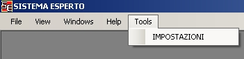

Dal pannello principale e' possibile accedere a diversi menu' per la gestione del software
1 Menu file

Nuova valutazione: si apre il pannello di valutazione
Salva testo attivita': viene salvato il testo contenuto nel pannello di attivita' (vedi pannello di valutazione)
Apri testo attivita': viene aperta il testo di valutazione precedente (vedi pannello di valutazione)
Chiudi programma: si chiude il programma
2 Menu view

Status bar
: si abilita/disabilita la status bar posta in basso a sinistra del pannello principale
3 Menu windows

Cascade/Tile
vertical/Tile orizontal: vengono disposte
automaticamente le finestre aperte all'interno del pannello principale
Close all: vengono chiuse tutte le finestre aperte all'interno del pannello principale
4 Menu windows 
Infomazioni: si apre il testo delle linee guida all'interno del pannello principale
Index: si apre l'aiuto del programma
About...: si apre la maschera con le informazioni del programma
5 Menu tools

Impostazioni:
si aprono i pannelli per regolare le impostazioni del
programma ( e' necessario inserire una password)